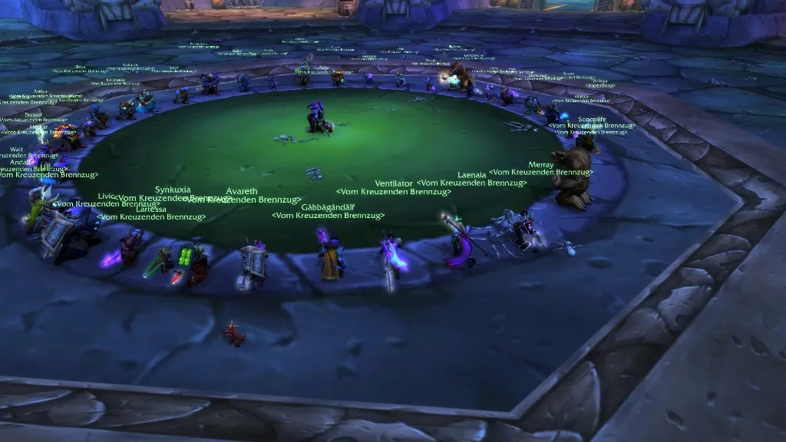

| Mo | Di | Mi | Do | Fr | Sa | So |
|---|---|---|---|---|---|---|
| 18:30 Uhr Montagsraid | 18:00 Uhr Maxvbadens Dienstagsraid | Kein Raid | Offi-Sitzung Spaß für Alt und Jung |
13:37 Uhr Rowers Rasanter Raid | Frei | 18:00 Uhr Sonntagsraid |
Anfang der Protokolle — ältere Einträge sind leider alle geschwärzt.
| Punkt | Protokolleintrag |
|---|---|
| Beginn | 18:00 Uhr geplant · 18:07 Uhr tatsächlicher Raidstart |
| Anwesend | 37 von 40 angemeldeten Spielern |
| Besondere Vorkommnisse | Ein Pull erfolgte, in dem Fullex frühzeitig zu Golemagg runtergesprungen ist |
| Wipes | 7 · davon mindestens einer „so nicht geplant“ |
| Loot | Hat jemand [Thunderfury, Blessed Blade of the Windseeker] gesagt? |
| Ende | 22:00 Uhr · allgemeine Zufriedenheit festgestellt |
| Punkt | Protokolleintrag |
|---|---|
| Beginn | 18:00 Uhr geplant · 20:12 Uhr tatsächlicher Raidstart |
| Anwesend | 38 von 40 angemeldeten Spielern |
| Besondere Vorkommnisse | Bei Razorgore wurde die Kontrolle über die Kugel kreativ interpretiert. |
| Wipes | 5 · davon 3 bei Chromaggus, der Rest war Razorgore |
| Loot | Neltharions Träne ging natürlich nicht an den Shadow Priest. |
| Ende | 23:15 Uhr |
| Punkt | Protokolleintrag |
|---|---|
| Beginn | 18:00 Uhr geplant · 18:04 Uhr tatsächlicher Raidstart |
| Anwesend | 19 von 20 angemeldeten Spielern |
| Besondere Vorkommnisse | Der Wurf um den Raptor hat das Gefüge zwischen den Offizieren sehr zerüttelt |
| Wipes | 4 · davon 2 durch Mandokirs Blick |
| Loot | 2 Privatinsolvenzen durch Deathrolls |
| Ende | 19:20 Uhr |
| Punkt | Protokolleintrag |
|---|---|
| Beginn | 23:00 Uhr t |
| Anwesend | 36 von 40 angemeldeten Spielern |
| Besondere Vorkommnisse | Warum zur Hölle haben wir einen AQ Raid nach einem 10 Stunden Release-Naxxramas Raid angesetzt? |
| Wipes | 1 · C'thun goes pew pew |
| Loot | Kein Death Sting. |
| Ende | 03:00 Uhr |
| Punkt | Protokolleintrag |
|---|---|
| Beginn | 18:00 Uhr geplant · 18:03 Uhr tatsächlicher Raidstart |
| Anwesend | 39 von 40 angemeldeten Spielern |
| Fortschritt | Spinnenviertel komplett besiegt · im Pestviertel Noth und Heigan der Unreine besiegt · Loatheb offen |
| Besondere Vorkommnisse | Der Tanz bei Heigan wurde teilweise als Freestyle ausgeführt. |
| Wipes | 11 · davon 6 bei Heigan, vermutlich wegen der Tanzeinlagen |
| Loot | Verteilung gemäß Gildenregelung · Fraktionswappenröcke wurden nicht verlost |
| Ende | 22:00 Uhr · Raid auf Wunsch der Gilde pünktlich beendet |
| Punkt | Protokolleintrag |
|---|---|
| Beginn | 18:00 Uhr geplant · 18:11 Uhr tatsächlicher Raidstart |
| Anwesend | 24 von 25 angemeldeten Spielern |
| Besondere Vorkommnisse | Bei Lady Vashj verlief die Kernweitergabe in Phase 3 nicht nach Plan. |
| Wipes | 14 · davon 7 bei Lady Vashj, drei davon wegen eines verlorenen Kerns |
| Loot | Asche von Al'ar an Nephiss |
| Ende | 22:00 Uhr |
Wir behandeln Gildenmitglieder und Mitspieler respektvoll. Streit wird nicht im Raidchat ausgetragen.
Solltet ihr unabgemeldet 30 Tage offline sein, werdet ihr zeremoniell von Parta aus der Gilde geworfen
Bei Raids ist Discord Pflicht. Es ist Gruppierungen STRENGSTENS untersagt, nebenbei mit ihren Freunden im Teamspeak zu sitzen
Die Lootvergabe erfolgt nach festgelegten Regeln. Diese lauten: Erst an Livic, dann an den LC, dann wird eine Münze geworfen
Mit dem Gildenbeitritt verpflichtet ihr euch, mindestens 6 Stunden am Tag für Ulf Käfer zu farmen. Ulf persönlich kontrolliert eure Anwesenheit einmal am Tag
Wir haben uns zusammengerissen und tatsächlich eine Serverbestzeit aufgestellt. Ist diese Geschichte wahr oder frei erfunden?
Nach vier Tagen ohne Schlaf ist Shivz vor seinem Schreibtisch kollabiert. Seine ersten Worte nachdem er wieder erwachte waren "Oida, muss Käfer grinden"
Gabbagandalf und Parta laden diesen Vatertag erneut zu ihrer jährlichen Tour ein. Gestartet wird mit viel Alkohol in Teldrassil. Dieses Jahr gehen wir fußläufig zum Dunkeln Portal. Für die Harten gibt es anschließend die Verlängerung in die Östlichen Pestländer
| Gegenstand | an |
|---|---|
| Thunderfury, Blessed Blade of the Windseeker | Ulf |
| DFT | Fullex |
| Neltharions Träne | nicht Apollon |
| Kiss of the Spider | Demonwalker |
| Mageblade | Livic |
| Alar's Asche | Nephiss |
| Runenstoff x20 | Parta |
Anm. der Bahnhofsleitung: Nur 2 Spieler haben nach der Lootvergabe die Gilde verlassen. Neuer Erfolg!
Discord empfohlen · Headset erforderlich · Mikrofon bitte vor Raidbeginn testen
Diese Seite wurde bereits von zahlreichen Besuchern aufgerufen.
Zuletzt aktualisiert: 10.10.2026
Optimiert für 1024 × 768 · Firefox · Internet Explorer 8